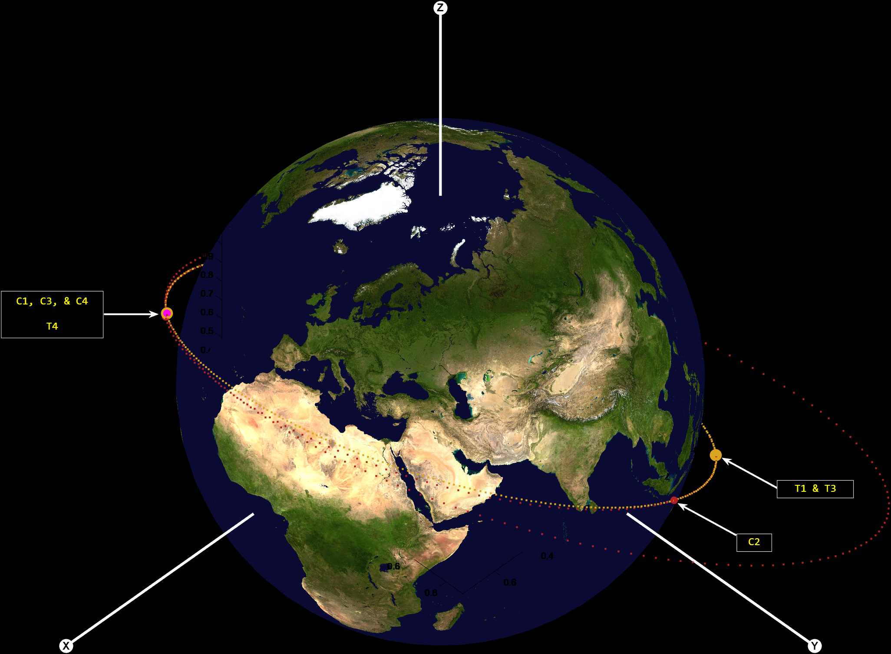
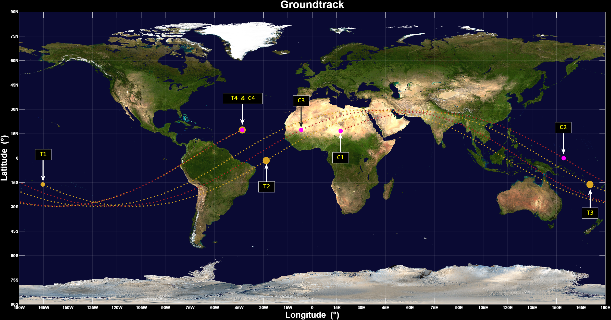

Astronautics Simulations
MATLAB-based astronautics simulations focused on orbital propagation, rendezvous maneuver planning, ground track generation, classical orbital element analysis, and interplanetary transfer optimization.
Project Overview
This page highlights my computational astronautics work from Astronautics II. The course focused on applying orbital mechanics theory through MATLAB simulations, numerical propagation, maneuver calculations, mission event summaries, and visual trajectory outputs.
The work included Earth-orbit propagation, relative motion analysis, two-impulse rendezvous planning, ground track visualization, orbital element tracking, inclination-change maneuvers, phasing maneuvers, Earth-Moon trajectory design, and interplanetary transfer optimization.
Highlighted Simulation: Robotic Servicing Rendezvous
The highlighted rendezvous simulation modeled a robotic servicing satellite performing a sequence of maneuvers to meet a target vehicle. The mission plan required the chase vehicle to propagate to a maneuver opportunity, complete an inclination change, continue to an appropriate phasing location, perform a phasing maneuver, and arrive at rendezvous with the target vehicle.
This project connected several astronautics concepts into one end-to-end mission simulation. I used MATLAB to propagate the target and chase vehicle trajectories, calculate the inclination-change opportunity, determine the phase angle between vehicles, compute the phasing maneuver, and visualize the resulting mission geometry.

Isometric view of the target and chase vehicle trajectories during the rendezvous simulation.
Rendezvous Ground Track
The ground track output shows the target and chase vehicle motion projected over Earth, with annotated mission events marking the sequence from mission commencement through maneuver execution and rendezvous. This visualization helped connect the orbital motion in space to vehicle locations over Earth during the mission timeline.

Ground track of the rendezvous simulation with annotated target and chase vehicle events.
Earth-Uranus Transfer Optimization
I also worked on interplanetary transfer optimization using a porkchop plot to evaluate possible launch and arrival date combinations for an Earth-Uranus mission. This type of analysis helps identify favorable launch windows by comparing transfer opportunities across a range of dates.
The porkchop plot provided a visual way to compare trajectory options and understand how launch timing, arrival timing, and transfer energy influence mission design. This work strengthened my understanding of interplanetary trajectory planning and how optimization tools are used to narrow down feasible mission opportunities.

Earth-Uranus porkchop plot used to evaluate launch window and transfer opportunity options.
Technical Approach
The simulation workflow began with orbital elements, state vectors, and mission-specific initial conditions. These inputs were propagated numerically using the two-body equations of motion, then used to generate orbit views, ground tracks, classical orbital element plots, and mission event summaries.
For the rendezvous mission, I calculated the required inclination change between the chase and target vehicle orbits, selected a maneuver opportunity, propagated both vehicles to that event, and applied the inclination-change burn. After the inclination change, I computed the phase relationship between the vehicles and designed a phasing maneuver to bring the chase vehicle to the target.
For the interplanetary transfer work, I used launch and arrival date sweeps to visualize transfer opportunities. The resulting porkchop plot helped compare mission options and identify more favorable combinations of departure and arrival dates.
Rendezvous Workflow
- Propagated target and chase vehicle trajectories
- Calculated inclination difference between the two orbits
- Selected the next maneuver opportunity
- Applied an inclination-change maneuver
- Calculated phase angle for the phasing maneuver
- Propagated the final rendezvous segment
Optimization Workflow
- Evaluated launch and arrival date combinations
- Generated a porkchop plot for transfer opportunity comparison
- Compared trajectory options across the design space
- Connected transfer timing to mission feasibility
- Used visualization to support trajectory selection
- Practiced mission design trade interpretation
Class Work Performed
Across the course, I worked on several progressively more complex astronautics simulations. These assignments helped build experience in moving from orbital mechanics equations to working numerical simulations and mission visualizations.
Earth-Orbit Simulation
- Modeled target and chase satellite relative motion
- Worked with RTN coordinate-frame relative position and velocity
- Calculated two-impulse rendezvous delta-v
- Generated annotated ground tracks and mission summaries
- Tracked classical orbital elements over time
Trajectory and Mission Design
- Simulated an orbital impact trajectory to determine impact timing
- Designed maneuver sequences using inclination change and phasing logic
- Worked with Earth-Moon Lagrange point trajectory optimization
- Created interplanetary transfer studies using porkchop plots
- Interpreted trajectory outputs for mission planning decisions
Skills Used and Developed
Technical Skills
- Orbital mechanics
- Two-body propagation
- Classical orbital elements
- Coordinate transformations
- Rendezvous and phasing maneuvers
- Delta-v calculations
- Interplanetary transfer optimization
Programming and Analysis Skills
- MATLAB scripting
- Numerical integration using ODE solvers
- Mission event formatting
- Plot generation and annotation
- Simulation debugging
- Technical interpretation of orbital results
- Data visualization for mission design
Selected Contributions
These simulations show my ability to turn astronautics theory into working computational tools. I used MATLAB to propagate spacecraft trajectories, update vehicle states after maneuvers, calculate delta-v requirements, generate mission visuals, and interpret results in the context of mission design.
Rendezvous Simulation
- Built an end-to-end maneuver sequence for target and chase vehicles
- Connected inclination change and phasing maneuvers into one mission timeline
- Generated annotated orbit and ground track visualizations
- Formatted mission event information including timing, location, and delta-v
Earth-Uranus Optimization
- Evaluated interplanetary transfer opportunities using date sweeps
- Used a porkchop plot to visualize launch window performance
- Compared mission timing options for transfer feasibility
- Strengthened understanding of trajectory optimization and mission planning
What I Learned
These projects helped me understand how orbital mechanics concepts become practical simulation tools. Instead of only solving isolated textbook problems, I built simulations that connected orbital elements, state vectors, maneuver design, time propagation, ground tracks, and mission event reporting.
The rendezvous simulation was especially useful because it required multiple steps to work together correctly. A successful mission depended on choosing the maneuver sequence, propagating each segment, updating the spacecraft state after each burn, and checking that the resulting trajectory reached the intended rendezvous condition.
The Earth-Uranus optimization work helped me see how interplanetary mission design depends heavily on timing. The porkchop plot made it easier to understand how launch windows and arrival dates influence transfer difficulty and mission feasibility.
Future Improvements
Future improvements could include adding more robust error checking, comparing numerical propagation results against analytical solutions, improving plot readability, adding interactive mission timelines, and expanding the models to include perturbations beyond the two-body assumption.